The iD Editor¶
L’éditeur iD (lancé en 2013) est le nouvel éditeur d’OpenStreetMap basé sur des technologies web. iD est rapide et facile à utiliser, et il permet d’utiliser différentes sources de données comme de l’imagerie satellite, des coordonnées GPS et les Field Papers.
L’éditeur iD est le meilleur moyen d’éditer la carte pour faire toutes les petites modifications qui ne requièrent pas toute la complexité de JOSM. Ce chapitre explique les principes d’édition avec iD. .. contents:: Sommaire
Commencer avec l’éditeur iD¶
- pour utiliser iD vous devez être connecté(e) à Internet.
- Ouvrir votre navigateur Internet et rendez-vous sur le site d’OpenStreetMap à l’adresse http://www.openstreetmap.org.
- Connectez-vous en utilisant votre compte OpenStreetMap.
- Rendez-vous sur la zone à modifier et zoomez.
- Cliquez sur la petite flèche à côté de Edit. Puis cliquez sur Edit with iD (in-browser editor).
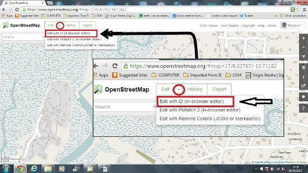
Interface Utilisateur de l’éditeur iD¶
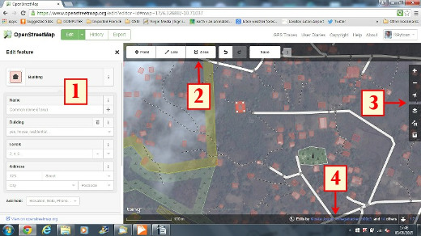
Panneau d’édition des entités (*Features*): Ce panneau montre les tags des objets sélectionnés sur la carte.
Vous pouvez ajouter ou éditer des tags à partir de ce panneau.
Outils: Ce panneau montre les outils d’édition de base:
Dessiner un point (node), Raccourci clavier 1 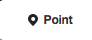
Dessiner une ligne (way), Raccourci clavier 2 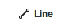
Dessiner une forme (polygon), Raccourci clavier 3 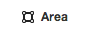
Annuler, Raccourcis clavier Ctrl+z 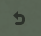
Répéter, Raccourcis clavier Ctrl+y 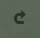
Sauvegarder les changements, Raccourcis clavier Ctrl+s 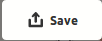
Panneau Carte: Ce panneau montre divers fonctions de configuration:
Zoomer, Raccourci clavier + 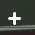
Dézoomer, Raccourci clavier -

Aller à votre position 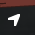
Configurer le fond de carte, Raccourci clavier b
Données de la carte, Raccourci clavier f
Ouvrir le menu d’aide, Raccourci clavier h
Panneau Information: Ce panneau montre diverses informations, telles que l’échelle et quels utilisateurs ont contributé à cette zone.
Configurer le fond de carte¶
Cliquer sur bouton paramètres du fond de carte ou utiliser le raccourci clavier b.
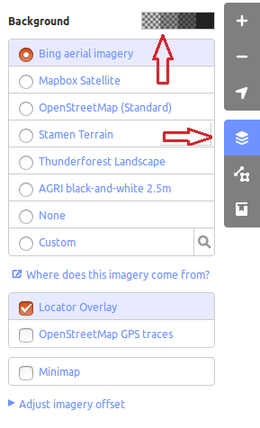
Pour changer la luminosité sur une de ces cases à cocher, les niveaux sont 100%, 75%, 50%, and 25%
Vous pouvez aussi changer le fond de carte basé sur votre fournisseur de tuile désiré (Bing Aerial Imagery est la valeur par défaut).
Vous pouvez ajouter vos propres tuiles en cliquant sur Custom. Par exemple, si vous voulez ** ajouter un Field Paper** [1], cliquez sur Custom puis cliquez sur la loupe (recherche) pour ouvrir la fenêtre suivante:-
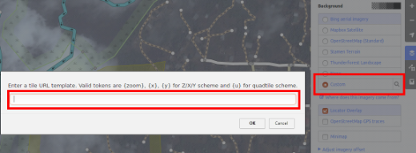 Et saisir votre FieldPaper snapshot URL, qui devrait être quelque chose ressemblant à ça : http://fieldpapers.org/snapshot.php?id=cqhmf2v9#18/37.80593/-122.22715
Pour afficher des traces GPS à partir de votre ordinateur (au format GPX), cliquez-glissez le fichier GPX dans l’éditeur iD.
Pour activer ** les traces GPS OpenStreetMap** cliquez sur la case à cocher. Dans l’image ci-dessous, les traces GPS publiques sont montrées dans des couleurs variées, indiquant la direction du voyage.
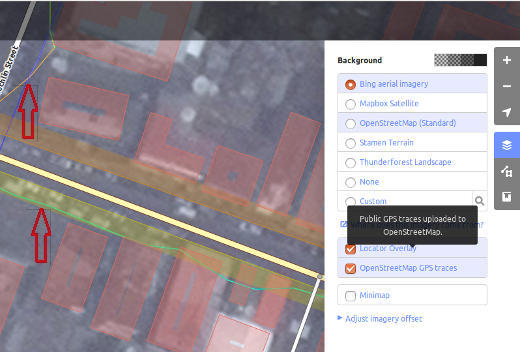
Si il y a un décalage de l’image, vous pouvez corriger le décalage de l’image en cliquant sur Fix Alignment.
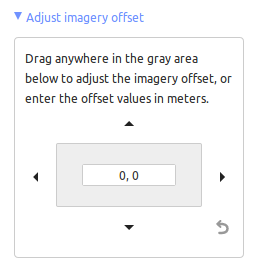


- Cliquez sur les boutons de navigation pour bouger l’image aérienne. Cliquez sur le bouton reset pour revenir à la position par défaut.
Edition simple avec iD¶
Ajout de Points¶
Pour ajouter un nouveau point, cliquez sur le bouton Point.
Votre curseur de souris devrait se changer en signe plus (+). Maintenant, cliquez sur une position que vous connaissez pour marquer un emplacement. Par exemple, si vous savez qu’il y a un hôpital dans votre zone, cliquez sur la position du bâtiment de l’hôpital.

Remarquez qu’un nouveau point a été ajouté. En même temps, le panneau gauche change pour afficher un formulaire où vous pouvez sélectionner les attributs pour l’objet. Cliquez sur Hospital Grounds pour tagger le point comme un hôpital.
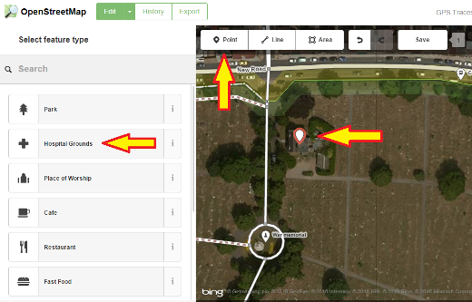
Vous pouvez utiliser le formulaire pour fournir des informations détaillées sur votre point. Vous pouvez saisir le nom et l’adresse de votre hôpital, et/ou tout autre information. Notez que chaque entité aura des options différentes, selon le tag vous avez choisi depuis le panneau Entités (Features).
Si vous faites une erreur, comme un mauvais placement, vous pouvez bouger votre point vers un nouvel emplacement en maintenant votre clic gauche maintenu sur le point et en le faisant glisser. Ou, si vous désirez supprimer votre point, faites un clic gauche sur le point, activer le menu contextuel en faisant un clic droit et ensuite cliquer sur le bouton qui ressemble à une poubelle.

Un “point” créé dans l’éditeur iD editor est actuellement un “noeud” (node) seul avec un ensemble de “tags”.
Dessiner des lignes¶
Pour ajouter une nouvelle ligne, cliquez sur le bouton Ligne.
Votre curseur de souris devrait se changer en signe plus (+). Trouvez une route qui n’est pas dessinée sur la carte et traçez-la. Cliquez une fois sur un point là où le segment de route commence, bougez votre souris, et cliquez pour ajouter des points additionnels. Double-cliquez pour terminer la phase de dessin. Remarquez le panneau sur la gauche.
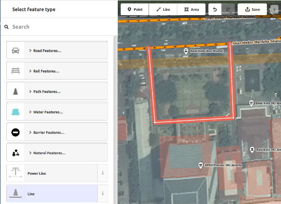
Tout comme pour le point, sélectionnez les tags appropriés pour votre ligne.
Vous pouvez déplacer des points de la ligne en faisant un clic gauche avec la souris sur un point et en déplacant la souris en maintenant le clic gauche.
Vous pouvez aussi déplacer la ligne entièrement en la sélectionnant, et en choisissant l’outil de déplacement (Move Tool). Puis en déplaçant la ligne jusqu’à une nouvelle position.
Quand vous cliquez sur un point individuel (node) de la ligne avec le bouton gauche de votre souris puis faites un clic droit pour afficher le menu contextuel, vous devriez voir apparaître les outils suivants:
Supprimer le point de la ligne.
Déconnecter le point de la ligne. 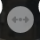
Séparer la ligne en deux à partir du point sélectionné. 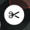
Quand vous faites un clic gauche sur une ligne (mais pas sur un point), vous verrez les outils suivants:
Supprimer ligne.
Créer un cercle à partir de la ligne (actif uniquement si la ligne est close) 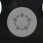
Former un carré à partir de la ligne (actif uniquement si la ligne est close)

Inverser la direction de la ligne (bien pour les cours d’eau et les rues à sens unique) 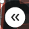
Une “ligne” crée dans l’éditeur iD est en fait une “way” avec des “tags” dessus.
Note
Remarque spéciale à propos de la Supression: En général, vous devriez éviter de supprimer la cartographie d’autres utilisateurs si elle demande uniquement une amélioration. Vous pouvez supprimer vos propres erreurs, mais vous devriez seulement ajuster les objets cartographiés par d’autres si ils ont besoin de changements. Cela préserve l’historique des objets dans la base de données d’OSM et est respectueux de nos camarades cartographes. Si vous pensez quelque chose doit être supprimé, pensez à demander au cartographe originel ou dans une des liste de diffusion d’OSM en premier lieu.
Dessiner des formes (Polygones)¶
Pour ajouter un polygone, cliquez sur le bouton Area.

{kind=link}
{kind=link}
{kind=link}
{kind=link}
{kind=link}
{kind=link}
{kind=link}
{kind=link}
{kind=link}
{kind=link}
{kind=link}
{kind=link}
{kind=link}
- Votre curseur de souris devrait se changer en signe plus (+). Essayez de tracer un bâtiment en utilisant l’image satellite comme un guide.
- Vous remarquerez que la couleur de la forme changera en fonction des propriétés que vous lui assignez. 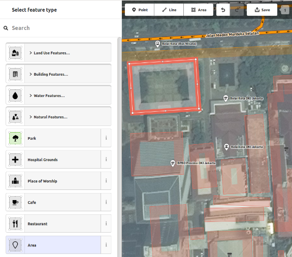
- Les outils disponibles quand vous sélectionnez une forme et activez le menu contextuel avec le clic droit sont similaires à ceux disponibles quand vous cliquez sur une ligne.
Un “polygone” dans l’éditeur iD est en fait un “closed way” avec des tags dessus.
Dessiner des Multipolygones¶
Parfois vous avez besoin de dessiner un polygone qui n’a pas qu’un contour intérieur mais aussi un ou plusieurs contours intérieurs. Pensez juste aux bâtiments avec des cours intérieures ou aux lacs avec des îles. Ne dessinez pas toutes ces chemins avec une seule ligne de sorte que le contour intérieur reste accroché au contour externe. Dessinez plutôt des contours séparés, affectez les tags au contour extérieur seulement, selectionnez tous les contours et tapez c de façon à les combiner en ce qui est appelé un multipolygone.
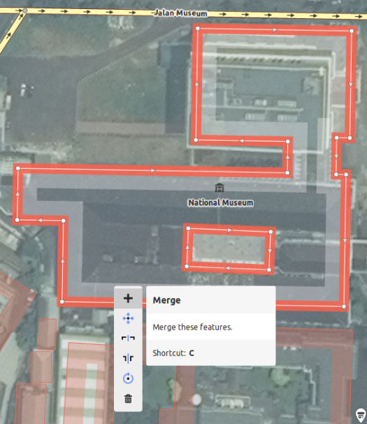
Quand vous sélectionnez n’importe lequel des contours du nouveau multipolygone, vous pouvez voir sur la gauche à quels multipolygones il appartient.
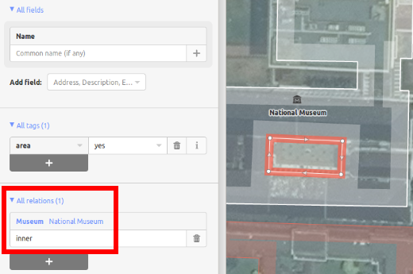
Sauvegardes ses changements¶
- Quand (et si) vous voulez sauvegardez vos changements sur OpenStreetMap, cliquez le
bouton Save. Le panneau gauche devrait afficher le panneau de chargement à distance.
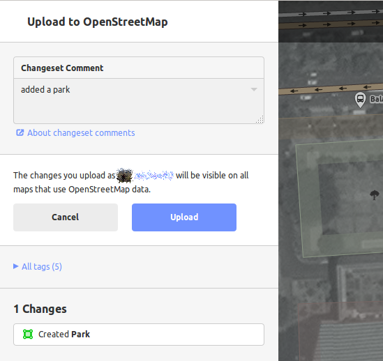
Saisissez un commentaire à vos changement et cliquez sur Save.
Si vous avez édité les mêmes entités (point, way ou area) en même qu’une autre personne, vous recevrez un avertissement comme quoi vos changements ne peuvent chargés tant que vous n’aurez pas résolu les conflits (conflicts) - Choisissez les changements à accepter et chargez vos changements. * Résoudre les conflits implique souvent d’accepter les changements d’autres personnes, auquel cas vous devrez probablement revenir sur l’entité en question et la changer encore une fois (** cette fois en sauvegardant rapidement après le changement pour éviter les conflits !**).*
Informations additionnelles et Tags personnalisés¶
Quand vous éditez un objet, vous verrez une bande d’icônes en bas du panneau d’attribut. Vous pouvez ajouter des informations additionnelles en cliquant sur ces icônes:
- Ajouter l’altimétrie
- Ajouter des notes 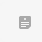
- Ajouter un contact / numéro de téléphone 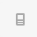
- Ajouter un tag source
- Ajouter un site web
- Ajouter une information d’accessibilité
- Ajouter un lien Wikipedia 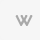
{kind=link}
{kind=link}
{kind=link}
{kind=link}
{kind=link}
{kind=link}
{kind=link}
Ou, vous pouvez ajouter des tags personnalisés en cliquant sur All tags. 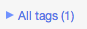
{kind=link}
Cela affichera tous les tags attachés à l’entité.
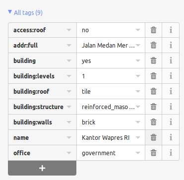
Cliquez sur le signe (+) pour ajouter des couples clés/valeurs ou cliquez sur la corbeille pour supprimer des tags.
iD versus JOSM¶
iD est suffisant...
- Quand vous faites des changements simples
- Quand votre connexion Internet est suffisamment rapide pour charger l’imagerie satellite et sauvegarder les changements
- Quand vous voulez être sûr de faire un schéma d’étiquetage cohérent et simple
- Quand vous ne pouvez pas installer de logiciels sur l’ordinateur que vous utilisez
JOSM est plus efficace...
- Quand vous ajoutez plusieurs bâtiments (voir le plugin buildings_tool)
- Quand vous éditez plusieurs polygones ou lignes déjà existants
- Quand votre connexion Internet n’est pas fiable ou que vous êtes hors ligne
- Quand vous appliquez un schéma d’étiquetage particulier (ou des paramètres personnalisés)
Ensuite ?¶
- Essayez la documentation de LearnOSM, dont ce guide de démarrage rapide est dérivé: http://learnosm.org/en/beginner/id-editor/